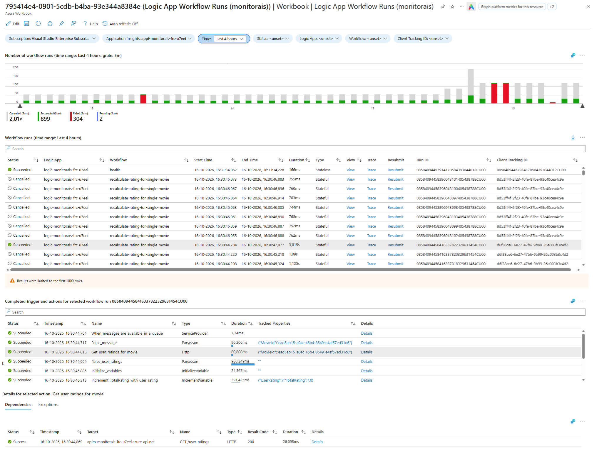
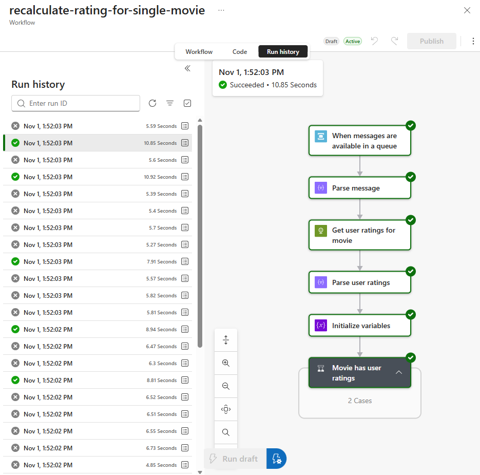
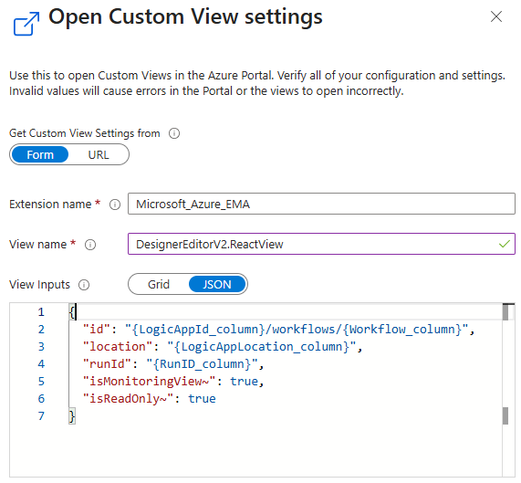
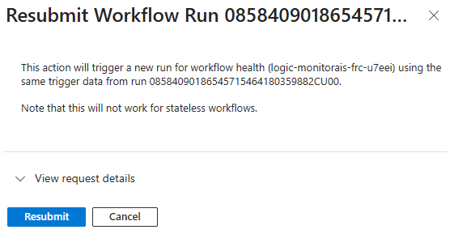
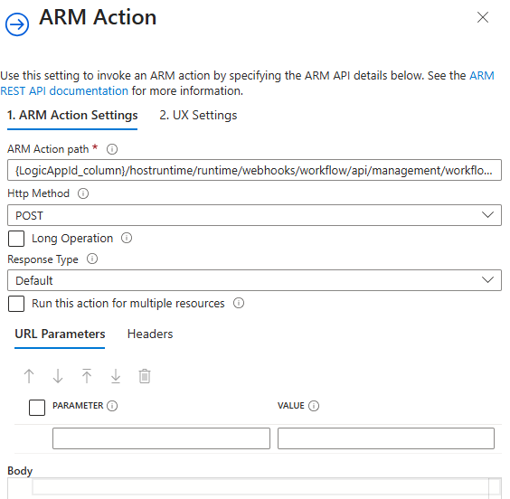
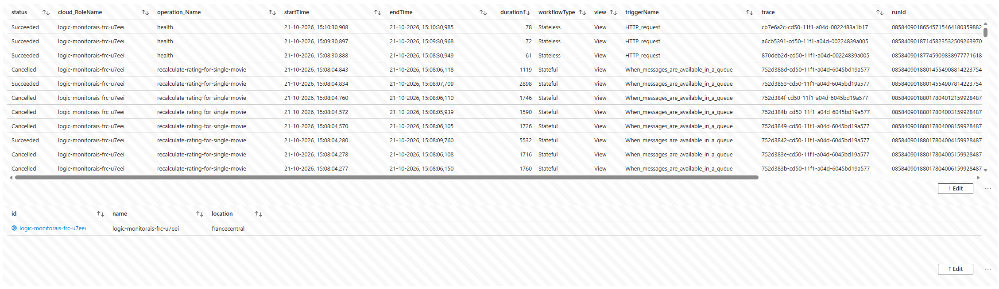
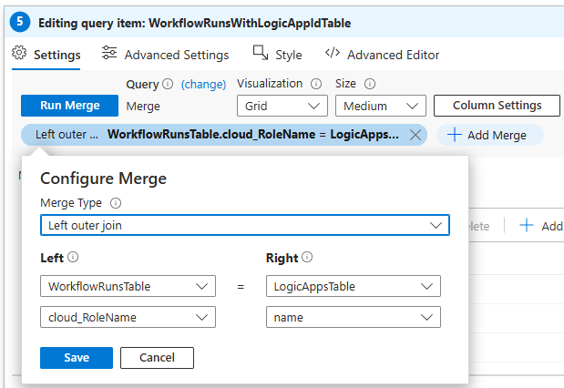

Logic App Workflow Runs Workbook

When I work with Logic Apps Standard, I regularly need to find out which workflow runs failed, were cancelled or are still running. The Insights screen of a Logic App and a few community workbooks help with that, but they only show a single Logic App and I ran into some limitations. Most notably, they don’t work well when the incoming operation ID is preserved during logging, which I enable to get end-to-end traces.
In this post, I’ll walk through an Azure Workbook that shows workflow runs for one or more Logic Apps that log to the same Application Insights instance. I’ll explain the queries behind it and how to configure the graph, the View and Resubmit links and the master-detail tables.
This is the second post in my Monitoring Azure Integration Services series.
Table of Contents
- Sample Template
- Workbook Overview
- Enabling Enhanced Telemetry
- Parameters
- Workflow Runs Graph
- Workflow Runs Table
- Triggers and Actions Table
- Action Dependencies and Exceptions
- Deploying the Workbook
- Considerations
- Conclusion
Sample Template
I’ve created an Azure Developer CLI (azd) template called Monitor Azure Integration Services to demonstrate different monitoring approaches for Azure Integration Services, including dashboards, workbooks, health checks, alerts and health models. The workbook featured in this post is included in the template. The template has a sample application that lets users manage movies and submit or update ratings. It uses API Management, Azure Functions, Logic App workflows and Azure Service Bus. If you’d like to deploy and try the solution, follow the template’s getting started instructions. The template also includes a demo guide for this workbook.
Workbook Overview
The workbook shows a graph with the number of workflow runs over time, a table with the runs themselves and, for the selected run, a table with its triggers and actions. For a selected action, you can see its dependencies and exceptions.

The definition file is Logic App Workflow Runs.workbook.
The workbook is inspired by the blog post Extending Logic Apps App Insight integration with Azure Workbooks and by the Run tab of the Insights screen of a Logic App. My workbook adds some features and fixes some issues:
- It can show data for multiple Logic Apps when they all log to the same Application Insights instance, so you don’t have to navigate to each Logic App individually.
- It shows cancelled workflow runs.
- It has a graph that displays the number of workflow runs per status over time.
- It has a Trace link that opens the end-to-end transaction details.
- It includes the trigger in the triggers and actions table.
- It still works as intended when preservation of incoming operation IDs is enabled. See Preserving Incoming Operation ID for more information.
I’m assuming you know a bit about editing Azure Workbooks. If not, have a look at my Azure Workbook Tips & Tricks post first.
Enabling Enhanced Telemetry
For the workbook to work, you need to enable enhanced telemetry for your Logic App. You do this by setting Runtime.ApplicationInsightTelemetryVersion to v2 in your host.json file:
{
"version": "2.0",
"extensionBundle": {
"id": "Microsoft.Azure.Functions.ExtensionBundle.Workflows",
"version": "[1, 2.00]"
},
"extensions": {
"workflow": {
"Settings": {
"Runtime.ApplicationInsightTelemetryVersion": "v2"
}
}
}
}
Parameters
The workbook has the following parameters at the top:
- Subscription and Application Insights: these let me deploy the workbook once and try it on different environments.
- Time: the time range used by all queries.
- Status: a hardcoded list of statuses (Cancelled, Failed, Running and Succeeded).
- Logic App: a drop-down with the Logic Apps that logged to the Application Insights instance in the selected time range, filtered on the selected statuses.
- Workflow: a drop-down with the workflows that ran in the selected time range, filtered on the selected statuses and Logic Apps.
- Client Tracking ID: a text field in which you can enter a specific client tracking ID.
For a more detailed explanation on how to configure parameters in a workbook, see Azure Workbook Tips & Tricks - Parameters.
Workflow Runs Graph
The graph displays the number of workflow runs per status over time. This is the query:
let statusFilter = dynamic([{Status}]);
let logicAppFilter = dynamic([{LogicApp}]);
let workflowFilter = dynamic([{Workflow}]);
let clientTrackingIdFilter = '{ClientTrackingId}';
let runEvents = traces
| extend category = tostring(customDimensions["Category"])
| where category == "Workflow.Operations.Runs"
| extend eventName = tostring(customDimensions["EventName"])
| extend runId = tostring(parse_json(tostring(customDimensions["resource"]))["runId"]);
runEvents
| where eventName == "WorkflowRunStart"
| where array_length(logicAppFilter) == 0 or cloud_RoleName in (logicAppFilter)
| where array_length(workflowFilter) == 0 or operation_Name in (workflowFilter)
| extend clientTrackingId = tostring(customDimensions["prop__clientTrackingId"])
| where isempty(clientTrackingIdFilter) or clientTrackingId == clientTrackingIdFilter
| join kind=leftouter (
runEvents
| where eventName == "WorkflowRunEnd"
) on operation_Id, runId
| extend status = iif(isempty(customDimensions1["status"]), "Running", replace_string(tostring(customDimensions1["status"]), @'"', ''))
| where array_length(statusFilter) == 0 or status in (statusFilter)
| make-series numberOfRequests=count() default=0 on timestamp from todatetime("{TimeRange:startISO}") to todatetime("{TimeRange:endISO}") step {TimeRange:grain} by status
The query first turns the multi-select parameters into arrays with dynamic([...]). An empty array means nothing is selected, so the filters only apply when the array isn’t empty.
It then selects all workflow run events, and extracts the event name and run ID from the custom dimensions.
It takes the start events, applies the filters and uses a left outer join to match each start event to an end event. The join is on both operation_Id and runId. I explain why in Preserving Incoming Operation ID. A start event without a matching end event has no end status, so the query treats it as Running. The status filter is applied last, because the status is only known after the join.
Finally, make-series counts the runs per status and creates a time series. This has a few benefits:
- With
make-series, the graph shows the entire selected period, even if there are no requests at the start or end of the period. Asummarizewithbinwould only return time slots that have data. - The granularity is based on the TimeRange parameter by using
{TimeRange:grain}. This way, the granularity is automatically adjusted depending on the time range you’ve selected in the Time parameter.
I’ve enabled time brushing on this graph, which means you can select a time period in the graph and all data in the workbook will be filtered accordingly. See Azure Workbook Tips & Tricks - Time Brushing for how to configure this.
Workflow Runs Table
This is the base query to select the workflow runs. I’ve left out the filters, which are the same as in the graph query.
let runEvents = traces
| extend category = tostring(customDimensions["Category"])
| where category == "Workflow.Operations.Runs"
| extend eventName = tostring(customDimensions["EventName"])
| extend runId = tostring(parse_json(tostring(customDimensions["resource"]))["runId"]);
let triggers=requests
| extend category = tostring(customDimensions["Category"])
| where category == "Workflow.Operations.Triggers"
| extend runId = tostring(parse_json(tostring(customDimensions["resource"]))["runId"]);
runEvents
| where eventName == "WorkflowRunStart"
| extend clientTrackingId = tostring(customDimensions["prop__clientTrackingId"])
| join kind=leftouter (
runEvents
| where eventName == "WorkflowRunEnd"
) on operation_Id, runId
| extend status = iif(isempty(customDimensions1["status"]), "Running", replace_string(tostring(customDimensions1["status"]), @'"', ''))
| join kind=leftouter (
triggers
| project triggerName=name, operation_Id, runId
) on operation_Id, runId
| project
status,
cloud_RoleName,
operation_Name,
startTime = timestamp,
endTime = timestamp1,
duration = tolong(customDimensions1["prop__durationInMilliseconds"]),
workflowType = customDimensions["prop__kind"],
view = "View",
triggerName,
trace = itemId,
runId,
clientTrackingId,
operation_Id
| sort by startTime desc
The first part is the same as in the graph query: it finds the start event of each run, joins the end event and determines the status. This query adds a second variable, triggers, which selects the trigger events from the requests table. A trigger is logged as a request, with its name in the name column. The run ID is extracted the same way as for the run events.
A second left outer join, again on operation_Id and runId, adds the name of the trigger to each run. It’s needed for the Resubmit link, which calls an API that requires the trigger name.
The final project selects and renames the columns for the table:
startTimecomes from the start event andendTimefrom the end event, which isnullfor a run that’s still running.durationandworkflowType(StatefulorStateless) are logged as custom dimensions. The duration is in milliseconds and comes from the end event.viewis a constant. It only exists so I have a column to render as the View link.traceis theitemIdof the start event. The Trace link uses it to open the end-to-end transaction details. See Azure Workbook Tips & Tricks - End-to-end Transaction Details for how to configure that.runIdandoperation_Ididentify the run. The View and Resubmit links and the triggers and actions table use them.
The table sorts by start time in descending order, so the most recent runs are shown first. I’ve configured the workbook to show a maximum of 1000 rows, so use the filters or time brushing to narrow down the results if needed.
Preserving Incoming Operation ID
By default, when enhanced telemetry is enabled, the operation ID matches the run ID of a workflow run. However, this is not the case when you preserve incoming operation IDs. A workflow that’s triggered by, for example, a request from API Management or another workflow, keeps the operation ID of the incoming request.
In my sample application, I have a workflow that triggers on a schedule and selects all movies. For each movie, a ‘recalculate rating’ command is sent to a Service Bus queue. Another workflow is triggered for each of those messages to recalculate the rating of the movie. When the incoming operation ID is preserved, all the logging of these workflows is correlated and contained in a single end-to-end trace.
The workbook from Extending Logic Apps App Insight integration with Azure Workbooks and the functionality on the Insights screen of a Logic App don’t work well when the incoming operation ID is preserved. They join on operation_Id, so they show multiple rows for a single workflow run. The View and Resubmit buttons also don’t work, because they use the operation_Id as the workflow run’s ID.
To preserve the incoming operation ID, set Runtime.ApplicationInsights.PreserveIncomingOperationId to true in your Logic App’s host.json, next to the enhanced telemetry setting:
{
"version": "2.0",
"extensionBundle": {
"id": "Microsoft.Azure.Functions.ExtensionBundle.Workflows",
"version": "[1, 2.00]"
},
"extensions": {
"workflow": {
"Settings": {
"Runtime.ApplicationInsightTelemetryVersion": "v2",
"Runtime.ApplicationInsights.PreserveIncomingOperationId": "true"
}
}
}
}
This preserves the incoming operation ID so workflow telemetry can be correlated with related telemetry. But because of this configuration, operation_Id alone doesn’t always identify a specific workflow run. That’s why my queries extract runId from the resource custom dimension and join on both operation_Id and runId.
Configuring the View Link
The View link opens a workflow run in the graphical designer interface of the Logic App. It works for workflows that have state, like stateful workflows or stateless workflows with run history enabled by setting the environment variable Workflows.<workflow-name>.OperationOptions to WithStatelessRunHistory. Here’s an example of a workflow run:

To configure the link:
- Open the settings of the View column.
- Select Link as the Column renderer.
- Select Custom View.
- Click Configure.
- In the Custom View settings screen, enter
Microsoft_Azure_EMAas the Extension name andDesignerEditorV2.ReactViewas the View name. - Select JSON for the View inputs and enter the following:
{ "id": "{LogicAppId_column}/workflows/{Workflow_column}", "location": "{LogicAppLocation_column}", "runId": "{RunID_column}", "isMonitoringView~": true, "isReadOnly~": true }

The {LogicAppId_column} syntax refers to the column of the row in which the View link is clicked. You can use {ParameterName} to refer to a parameter (no postfix necessary). The Logic App ID and location aren’t part of the telemetry. I explain how I get them in Getting the Logic App ID.
Configuring the Resubmit Link
The Resubmit link works only with stateful workflows. I couldn’t find a way to hide it for stateless workflows, so it remains visible for both stateful and stateless workflows.
When you click the Resubmit link, a screen with information about the workflow run is shown in the context pane on the right. You can click Resubmit there to actually resubmit the workflow run. Example:

To configure the link:
- Open the settings of the TriggerName column.
- Select Link as the Column renderer.
- Select ARM Action.
- Check Open link in Context pane.
- Click Configure.
- On the ARM Action Settings tab, set ARM Action path to
{LogicAppId_column}/hostruntime/runtime/webhooks/workflow/api/management/workflows/{Workflow_column}/triggers/{TriggerName_column}/histories/{RunID_column}/resubmit?api-version=2018-11-01and specifyPOSTas the Http Method. - On the UX Settings tab, specify a title, description and button label to display when the Resubmit link is clicked.

As with the View link, you can use {Workflow_column} to use values from the columns of the row in which the link is clicked and {ParameterName} to refer to a parameter. It works in the fields of both the ARM Action Settings and UX Settings tabs.
Getting the Logic App ID
The View and Resubmit links need the full ID of the Logic App, which includes the subscription ID and resource group name. For example: /subscriptions/00000000-0000-0000-0000-000000000000/resourceGroups/rg-monitorais-frc-u7eei/providers/Microsoft.Web/sites/logic-monitorais-frc-u7eei. This isn’t available in the Application Insights logging of a workflow run, so I’ve created two hidden queries and combine their results in a third one.
This differs from how the workbook in Extending Logic Apps App Insight integration with Azure Workbooks works. There the Logic App ID is retrieved based on a parameter. But because my table can show runs of different Logic Apps, I needed another solution.
The screenshot shows the two hidden grids:

The first grid contains the workflow runs, based on the Application Insights logging. The second grid runs a query on Azure Resource Graph for the selected subscription to get all Logic Apps:
where type in~('microsoft.web/sites')
| where kind contains "workflowapp"
| project id, name, location
The third grid is the one that’s displayed. It merges the results of the other two with a left outer join on the Logic App name. This way, each run has the ID and location of the Logic App in which the workflow was executed.

Triggers and Actions Table
I use a master-detail table to show the completed triggers and actions of the selected workflow run. See Azure Workbook Tips & Tricks - Master-detail Table for how to set that up.
This query selects the trigger and actions of the workflow run:
requests
| extend category = tostring(customDimensions["Category"])
| where category in ("Workflow.Operations.Triggers", "Workflow.Operations.Actions")
| where operation_Id == '{SelectedWorkflowOperationID}'
| extend runId = tostring(parse_json(tostring(customDimensions["resource"]))["runId"])
| where runId == '{SelectedWorkflowRunID}'
| extend
type = coalesce(customDimensions["actionType"], customDimensions["triggerType"]),
trackedProperties = customDimensions["trackedProperties"],
retries = iif(
isnull(customDimensions["retryHistory"]),
long(null),
array_length(parse_json(tostring(customDimensions["retryHistory"])))
)
| project
status = resultCode,
timestamp,
name,
type,
duration,
trackedProperties,
retries,
itemId,
id
| sort by timestamp asc
Triggers and actions are both logged as requests, so the query selects both categories. The {SelectedWorkflowOperationID} and {SelectedWorkflowRunID} parameters hold the values exported from the selected row in the workflow runs table. Filtering on both the operation ID and the run ID ensures only the telemetry of the selected run is shown, even when the operation ID is shared by multiple runs.
The type column uses coalesce to show the action type for actions and the trigger type for triggers. This is what lets me include the trigger in the same table as the actions. The retries column counts the entries in the retryHistory custom dimension, if it exists. The id column identifies the action and is what the dependencies and exceptions queries use as {SelectedWorkflowActionID}. This column is hidden in the table, because it’s only needed to pass the selected action to those queries.
Action Dependencies and Exceptions
When you select an action, the workbook shows its dependencies and exceptions in two tabs. This is the dependencies query:
dependencies
| where operation_ParentId == '{SelectedWorkflowActionID}'
| extend
status = case(
success==true, 'success',
toint(resultCode) between (400 .. 499), 'warning',
'error'
),
policySource = tostring(customDimensions["Source"])
| project status,
timestamp,
target,
name,
type,
resultCode,
duration,
itemId
| sort by timestamp desc
And this is the exceptions query:
exceptions
| where operation_ParentId == '{SelectedWorkflowActionID}'
| project timestamp,
problemId,
type,
outerMessage,
itemId
Both queries select the telemetry whose parent is the selected action, using operation_ParentId. In the dependencies query, I map the result to a status so I can show an icon. A successful dependency is a success, a 4xx response code is a warning and everything else is an error. I treat client errors as a warning because they don’t necessarily indicate a problem with the workflow itself.
Deploying the Workbook
I use a generic module to deploy the workbook, as described in Deploy Azure Workbooks with a Reusable Bicep Module. The module is used in this main.bicep of the sample template. Here’s a short snippet:
module logicAppWorkflowRunsWorkbook './modules/workbooks/workbook.bicep' = {
scope: resourceGroup(resourceGroupName)
params: {
environmentName: environmentName
location: location
tags: tags
displayName: 'Logic App Workflow Runs'
serializedData: string(loadJsonContent('./modules/workbooks/Logic App Workflow Runs.workbook'))
placeholders: {
AzureSubscriptionId: subscription().subscriptionId
ApplicationInsightsId: appInsights.id
}
sourceId: appInsights.id
}
}
You can also deploy the workbook manually, as described here.
Considerations
Queries over Application Insights data can show incomplete results when telemetry is sampled. Sampling is enabled by default for Logic Apps, so some workflow runs, triggers or actions might be missing from the workbook. I’ve also seen completed workflow runs shown as running because the end event wasn’t logged. You can check the retained percentage with this query:
union requests, dependencies, pageViews, browserTimings, exceptions, traces
| where timestamp > ago(1d)
| summarize RetainedPercentage = 100 / avg(itemCount)
by bin(timestamp, 1h), itemType
To disable sampling for a Logic App, set isEnabled to false in the samplingSettings of your host.json file:
{
...
"logging": {
"applicationInsights": {
"samplingSettings": {
"isEnabled": false
}
}
}
}
Beware that this might significantly increase the amount of telemetry, which increases cost as well.
Conclusion
Finding failed, cancelled or running workflow runs across multiple Logic Apps was the problem I wanted to solve. This workbook does that with a graph for the trend, a table to find specific runs and detail tables to drill into triggers, actions, dependencies and exceptions. Joining on both the operation ID and the run ID makes it work when incoming operation IDs are preserved, so I can keep my end-to-end traces.
The workbook is a starting point. You can adjust the parameters, columns and queries to fit your own integrations.